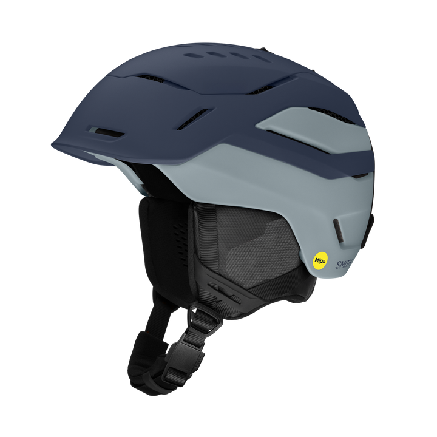
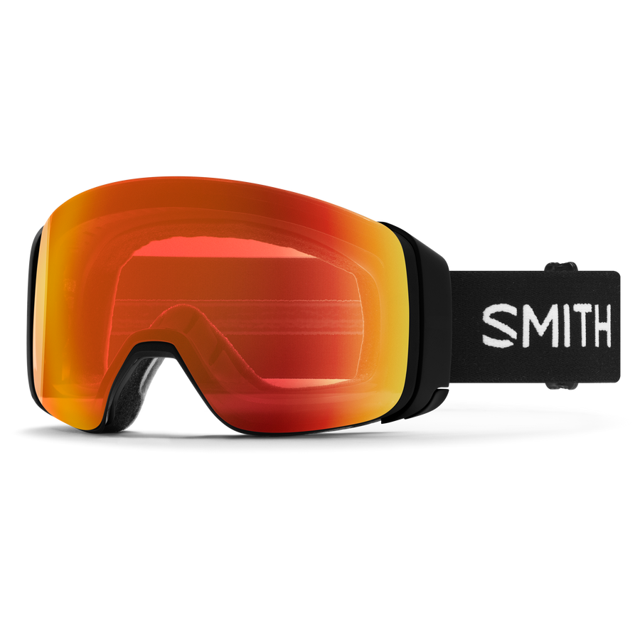

ALL-MOUNTAIN
Vantage 2 MIPS
Для тех, кто хочет управлять вентиляцией в течение дня. Верх и боковые зоны регулируются независимо.
Характеристики SmithЭКИПИРОВКА · ВАРШАВА
Два шлема, маска 4D MAG и сменные линзы. Сравните цены и найдите, где примерить комплект в Варшаве.
ЗАЩИТА

ALL-MOUNTAIN
Для тех, кто хочет управлять вентиляцией в течение дня. Верх и боковые зоны регулируются независимо.
Характеристики Smith
ПАРК И ТРАССА
Низкопрофильный шлем со съёмными амбушюрами и фиксированной вентиляцией.
Характеристики Smith| Параметр | Vantage 2 | Method Pro |
|---|---|---|
| Конструкция | Гибридная оболочка из трёх частей | In-mold |
| Защита | MIPS + полное покрытие KOROYD | MIPS + зональное покрытие KOROYD |
| Вентиляция | 40 отверстий, две регулируемые зоны | Фиксированная, 8 отверстий по спецификации Smith |
| Посадка | BOA 360 | Микрорегулировка колёсиком |
| Застёжка | Магнитная Fidlock | Магнитная |
| Совместимость с маской | AirEvac | AirEvac |

ОПТИКА
Нижний изгиб линзы BirdsEye Vision расширяет поле зрения вниз. По данным Smith, суммарный обзор на 25% шире, чем у других сферических линз бренда.
Магниты Smith MAG помогают совместить линзу с оправой, а фиксаторы удерживают её на месте. Посадка среднего размера.
Smith указывает две линзы ChromaPop, жёсткий футляр и мешочек с отделением для запасной линзы. Цвет и пара линз зависят от артикула.
Комплектация у SmithСВЕТОПРОПУСКАНИЕ
Чем выше VLT, тем больше света пропускает линза. Короткая отметка показывает фиксированное значение, полоска — диапазон фотохромной линзы. Вертикальный указатель можно двигать ползунком. Нажмите на название или фотографию линзы, чтобы посмотреть цену.
Значения VLT могут различаться по модели и сезону. Таблица Smith Japan · Фотографии и артикулы Smith
Цены на линзы указаны отдельно от маски. Перед заказом проверьте, что в карточке указана обычная 4D MAG. У версий S и XL другая форма линзы.
ПОКУПКА
Сравнение новых товаров по проверенным польским витринам на 26 ноября 2026 года. Цены в PLN без доставки. Наличие онлайн и остаток в магазине могут отличаться. Цены MCK Sport из каталога и поисковой выдачи требуют звонка и исключены из расчёта.
Для примерки за одну поездку: у WhiteSport Method Pro Matte Ironwood (S/M) или Matte Black (XL) вместе с 4D MAG White Vapor стоят 1 458 zł. Vantage 2 MIPS за 869 zł в S/M/L и та же маска стоят 1 768 zł. Позвоните, чтобы проверить остаток в зале.
БЮДЖЕТ
При открытии выбраны самые дешёвые подтверждённые шлем и маска. Стартовый шлем доступен в M (55–59 см). Укажите свой размер в разделе цен, чтобы подобрать покупку.
САМОВЫВОЗ И ПРИМЕРКА
Выберите магазин, чтобы открыть его точку на карте. Перед поездкой уточните наличие нужной модели.
ul. Mangalia 4
Контактыul. Malborska 47
Контактыal. 3 Maja 2 · Powiśle
Уточните остатки 4D MAG, Vantage 2 MIPS и Method Pro. 606 236 794
Контакты и часыul. Ząbkowska 22/24/26, lok. 145 · Praga
Шлемы, 4D MAG и отдельные линзы. 600 411 663
Контакты и часыКарта OpenStreetMap загружается.